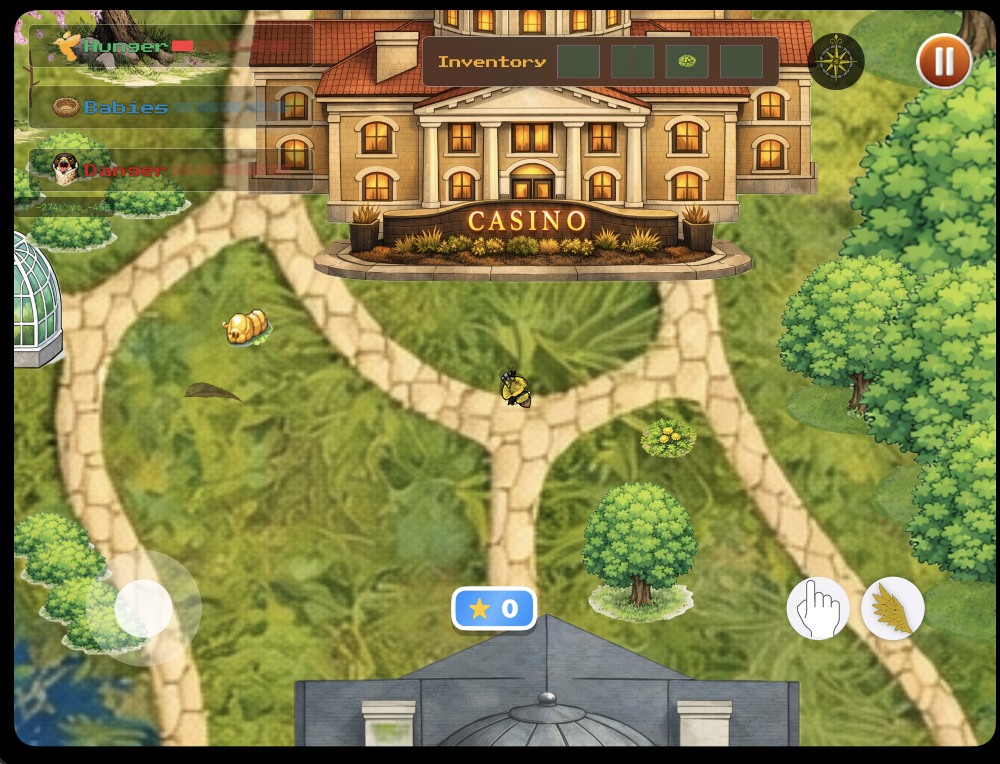

TakeFlight
A 5-in-1 survival mini-game collection set on Detroit's Belle Isle — SpriteKit physics, a custom SwiftUI joystick with full keyboard support, and Game Center achievements. Built at the Apple Developer Academy in 6 weeks. Selected by Apple to demo at a downtown Detroit event after shipping.
The Team
TakeFlight was a 5-person team at the Apple Developer Academy — concept to App Store in 6 weeks. After shipping, Apple invited the team to demo the game at a downtown Detroit event.
The Core Loop

TakeFlight puts you in control of a bird surviving on Detroit's Belle Isle. Start a run, rotate through five quick challenges — memory, coordination, speed, and reflexes — while managing a hunger bar and building nests. Each mechanic feeds into the others. Let your hunger drop and the run ends. Build nests and it extends. Every session is short by design, every run a chance to improve.
Quick Challenges
Each run cycles through five challenges that each isolate a different skill — coordination, nesting, reflexes, and navigation. Game Center tracks achievements across all of them, giving every run a score worth chasing.
The Mini-Games
Getting Hungry — coordination feeding mechanic
Build Your Home — material collection and nesting
Avoid Predators — dodge-and-survive reaction test
Escape the Island — navigation under pressure
Score, Rest, Replay

When the run ends your score posts to Game Center and you can jump straight back in.
Key Implementations
My work covered four areas: Game Center integration, the virtual joystick controller, the tutorial system, and the core game loop.
Game Center. Implemented the full authentication lifecycle — silent sign-in on launch, graceful degradation when the player isn't signed in, native banner notifications for unlocked achievements, and callbacks wired into the game loop so achievements fire at exactly the right moment.
Custom joystick controller. Built a SwiftUI on-screen joystick that normalizes both touch drag and keyboard input into a single CGPoint velocity property. SpriteKit reads one source regardless of platform — no branching in the game logic. The joystick uses radius clamping and drag gesture recognition to stay responsive without oversteering. One clean interface, two very different input sources.
Tutorial state machine. The tutorial tracks three phases — tutorial, active, game-over — and hands off cleanly to the main game loop when the player is ready. The state machine made it easy to iterate on pacing without touching the game logic.
Core game loop. Built the SpriteKit update loop with delta-time clamping to keep physics stable on slow frames, a hunger accumulator that depletes at a consistent rate regardless of frame rate, and position persistence across scene transitions. Five mini-games sharing one game state meant every scene handoff had to be airtight.
The Hard Parts
Learning SpriteKit cold. Zero SpriteKit experience at the start. I worked through Apple's documentation systematically, built isolated component tests before touching the main game, and used SwiftUI as a stable outer container while I found my footing in the scene graph. By the end of six weeks the game was shipping with multi-scene transitions, physics bodies, camera work, and a full input layer.
Shared state across five scenes. Each mini-game is its own SpriteKit scene. A centralized RunState model carries hunger, score, and nesting progress through every transition — one missed value breaks the sense that it's one continuous run. Getting this pattern right early made everything else go smoothly.
Cross-device input without branching. Once velocity was the only thing SpriteKit ever saw, keyboard support on Mac cost almost nothing. The normalization layer was the right call.